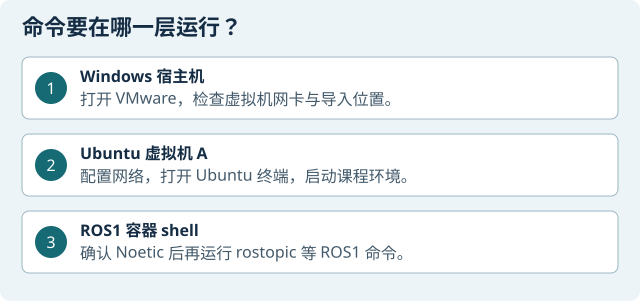

目标：先认清环境与边界
本网站与同一交付目录中的完整 Ubuntu 虚拟机和“实验文件”配套使用。虚拟机文件夹名为 Ubuntu-A 与 Ubuntu-M，课程资料在旁边的 实验文件 文件夹。A 是控制机（Ubuntu 24.04 LTS、XFCE、Noetic Docker），M 是中间机（Ubuntu 24.04 LTS、XFCE 和网络工具）。每台 VM 都是独立虚拟机目录，需保留配置和全部虚拟磁盘。
继续条件：Ubuntu-A、Ubuntu-M 和 实验文件 均已完整解压，VMX 能找到所引用的虚拟磁盘；课程材料路径已按清单核对。缺件或校验不符时先停下核对来源。
准备：选择实际可用的路线
路线 A：使用交付的完整虚拟机。A 控制机位于 Ubuntu-A（VMX：Ubuntu-A.vmx），M 中间机位于 Ubuntu-M（VMX：Ubuntu-M.vmx）；课程资料在同级 实验文件 文件夹。A 使用 Ubuntu 24.04 LTS/XFCE 与 ROS 1 Noetic Docker；M 使用 Ubuntu 24.04 LTS/XFCE 与网络工具。每台 VMX 引用的全部 VMDK、分卷磁盘和配置文件都要保留在原文件夹结构中。
路线 B：先阅读。尚未解压或导入虚拟机时，可以先阅读流程；文件齐备后再运行命令。
获取并安装 VMware Workstation Pro
如果电脑尚未安装 Workstation Pro，使用 Broadcom Support Portal 登录，在 My Downloads / Free Software Downloads 中选择适用于 Windows 的 VMware Workstation Pro，并按页面要求确认条款后下载。Broadcom 官方说明：个人使用安装时选择 Personal Use，不需要从第三方获取许可证密钥；版本和界面以下载页及安装向导当前显示为准。参考：下载说明、Windows 安装说明、许可说明。下载的安装程序按官方安装向导完成安装，随后从开始菜单打开 VMware Workstation Pro。
如果安装结束时弹出许可证密钥窗口，请按Broadcom 官方说明选择 Personal Use（个人使用）或点击 Finish（完成）。如果当前安装包只能输入密钥，请从 Broadcom 下载当前的免费版 Workstation Pro。
以下导入步骤从已安装并打开 VMware Workstation Pro 开始。示例针对交付清单中的独立 VMX 文件夹；若实际交付格式不同，按清单处理，不自行猜转换方式。
操作步骤：从个人电脑到实验台
导入前先检查：在 Windows 文件资源管理器中完整解压交付包到有足够空间、路径稳定的位置。打开共享交付目录，应能看到 Ubuntu-A、Ubuntu-M 和同级 实验文件。A 文件夹内为 Ubuntu-A.vmx，M 文件夹内为 Ubuntu-M.vmx；各自引用的全部 .vmdk 磁盘及分卷文件都要在位。保留目录结构，不移动或重命名 VMX/VMDK，并按交付清单核对完整性。缺件或校验不符时不要导入。
打开 VMware Workstation Pro
Windows / VMware Workstation Pro从 Windows“开始”菜单搜索并打开 VMware Workstation Pro，等待主界面和左侧虚拟机库出现。若尚未安装，先按上方官方渠道说明完成安装。
继续：看到 Workstation 主界面；VMware 还未开启任何虚拟机。
从 VMware 主界面打开 VMX
Windows / VMware Workstation Pro在主界面点“文件 → 打开”（也可按 Ctrl+O）；在文件选择窗口进入
Ubuntu-A文件夹，选中Ubuntu-A.vmx并点“打开”，在左侧库中确认 A 出现。再点“文件 → 打开”，进入Ubuntu-M，选中Ubuntu-M.vmx并打开。若 VMware 询问该 VM 是已移动还是已复制，选择「我已复制」，让 VMware 为你的副本生成独立标识。继续：A、M 都出现在 VMware 库中；点选各台虚拟机时没有“找不到磁盘”提示。遇到文件缺失、转换或兼容性提示，先保存提示原文并停下核对。
首次启动前选择网卡模式
Windows / VMware Workstation Pro先在库中选中虚拟机，点“虚拟机 → 设置 → 网络适配器”。两台 VM 首次启动前均保持断网：取消“已连接”和“启动时连接”，然后点“确定”。需要让 Ubuntu 通过宿主机上网时，再选“NAT”并勾选“启动时连接”。
继续：首次启动采用断网模式；NAT 用于一般互联网访问，不用于连接需在同一局域网的小车。
首次启动并设置自己的登录密码
Ubuntu-A / Ubuntu-M确认该 VM 的网络适配器仍为断开，再点 VMware“开启此虚拟机”。首次进入 Ubuntu 24.04 LTS/XFCE 桌面会自动登录
student。打开 Ubuntu 终端，运行下列命令，按提示设置自己使用的密码：sudo robotics-set-password完成后重启虚拟机；下次启动时使用自己设置的密码登录。交付中没有预设密码，不要向他人索取或把密码写入共享记录。A、M 分别设置各自密码。
继续：两台 VM 均能使用新设置的密码正常登录；首次设置密码时保持网卡断开。
打开 Ubuntu 本地终端
Ubuntu 本地终端按 Ctrl+Alt+T 或从应用菜单打开“终端”。这里不是 PowerShell、SSH 小车窗口或容器 shell。
继续：出现 Ubuntu shell 提示符。

操作示意｜新开终端后先认清当前所在层。实验一只做本机仿真。 确认课程目录与配套资料
Ubuntu-A 本地终端A 控制机已包含 ROS 1 Noetic Docker，预置了
~/robot_labs和~/lab4_prep/工具。打开终端，确认目录存在：ls ~/robot_labs ls ~/lab4_prep/工具其余说明和配套资料位于交付目录中的
实验文件；对照该目录清单使用对应版本，不要覆盖预置目录。实验四 Gazebo 镜像是否就绪，查看交付根目录开工说明.md的“各实验能从哪里开始”表。继续：两个目录存在，文件和版本符合交付清单；缺项时先按配套准备说明处理。
区分首次安装和日常使用
Ubuntu 本地终端A 的 Noetic Docker 和课程环境已随交付准备；M 含对应网络工具。按章节说明进行软件自检。没有要求安装或更新时，不重复构建或重新安装。
继续：A、M 的环境检查按各章指定命令执行；失败时先查配套说明。
认识 A、M、B 角色
全组成员A 是 ROS 控制机，M 是指定安全实验的中间机，B 是实体机器人。先约定操作者、看车者和记录者。
继续：每人知道设备归属和控制权。
按现场网络将 VMnet0 绑定到实体网卡
Windows / VMware Workstation Pro仅在章节要求控制机加入现场局域网时操作。打开“编辑 → 虚拟网络编辑器”，选 VMnet0，将“桥接到”从自动改为当天实际承载现场网络的物理 WLAN 或 Ethernet 网卡，点“应用”。回到目标虚拟机的“虚拟机 → 设置 → 网络适配器”，选择“自定义：特定虚拟网络”并选 VMnet0；再按现场操作单勾选“已连接”“启动时连接”。不要把 VMnet0 留在自动桥接，也不要照抄历史网卡名称。
继续：VMnet0 明确绑定当天正确的物理网卡，VM 设置指向 VMnet0；进入 Ubuntu 后再核对接口、IPv4 和路由。
查看接口和路由
Ubuntu 本地终端运行：
ip -br -4 addr ip -4 route记录当下接口和地址，不要用 Windows、Docker 或历史地址替代。
继续：桥接场景有现场网接口和合理路由；否则回查 WLAN/VMware。
确认实验对象与停车方式
实验现场核对本组设备、型号、场地、电源、急停/断电方式和看车同伴；车辆起步时保持静止。
继续：设备归属和停车方式明确。
按章节做前置检查
章节指定终端分清软件、网络和传感器检查，等待完整输出。话题名、ping 或进程存在都不能替代数据新鲜度。
继续：本章全部前置项通过；失败时留原文并停止推进。
建立本轮证据目录
Ubuntu / 记录者按套件建立独立轮次，保存日志、截图、视频、地图等，标记实验号、日期轮次、角色和仿真/隔离/实车场景。
继续：不会覆盖上一轮；凭据不放入公开记录。
故障时逐项排查
操作者保存错误原文、时间和当前窗口，按章节顺序一次检查一个问题。不要同时改网络、时间、驱动和参数。
继续：修复后重过相应检查；仍失败就停下保留材料。
结束、停车、记录恢复状态
操作者 / 看车者按章节取消目标或结束发布程序，目视确认实体车停稳；保存原始证据，记下网络与共享服务状态。
收尾：设备安全、证据可回查、无遗留控制者。
检查点
- 按清单导入 A、M 独立 VM 文件夹，文件校验/磁盘引用符合交付说明。
- 能区分 Windows、Ubuntu、容器 shell 和小车 SSH。
- 到场重新检查 Wi-Fi、桥接、Ubuntu 地址和路由。
- 实体实验有看车者、可用停车方式和唯一控制者。
- 仿真、隔离、实车材料分开保存。
停止条件：设备、地址、ROS 版本、时间戳、控制权或停车方式不清楚。
常见问题
VMware 提示缺少磁盘
不要浏览到另一台 VM 的磁盘，也不要改写 VMX 路径。关闭提示，回到对应文件夹核对 VMX 引用的 VMDK、分卷和文件名，再按交付清单检查校验值。
Windows 有网但 Ubuntu 找不到车
核对桥接、无线网卡、Ubuntu 接口和目标路由。容器共享 Ubuntu 网络，不会自动修复桥接。
首次登录后没有密码
首次启动按提示进入自动登录桌面后，在 Ubuntu 终端运行 sudo robotics-set-password 并自行设定密码，然后重启。不要从网络教程查找或复制所谓默认密码。
ROS 命令不存在
确认窗口和 ROS 版本。Noetic 命令在课程容器中运行；不要在 Jazzy 宿主机随意安装 ROS 1 包。
话题可见但检查失败
保存输出并检查最近收包、header 时间戳和 TF；消息数量增加不代表数据新鲜或坐标变换完整。
收尾
- 结束速度发布、遥控或导航，目视确认实体车停稳。
- 保存日志、地图、截图或录像并标明场景。
- 不停止其他组使用的 master、驱动或共享虚拟机。
- 记录网络和设备状态，只清理本轮产生的临时文件。